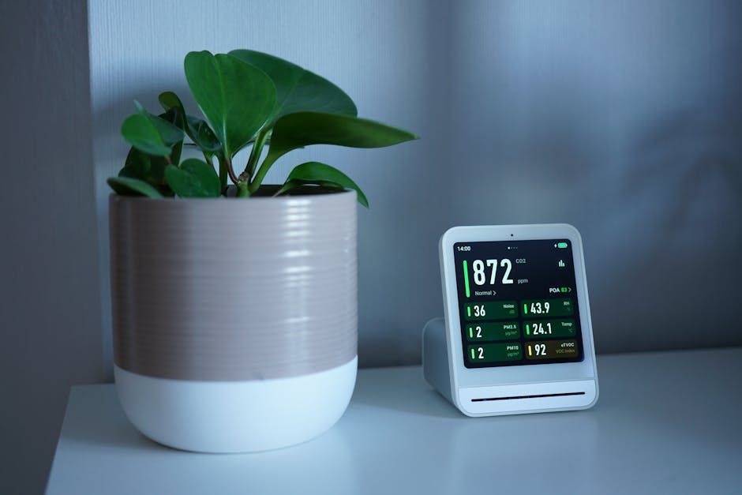
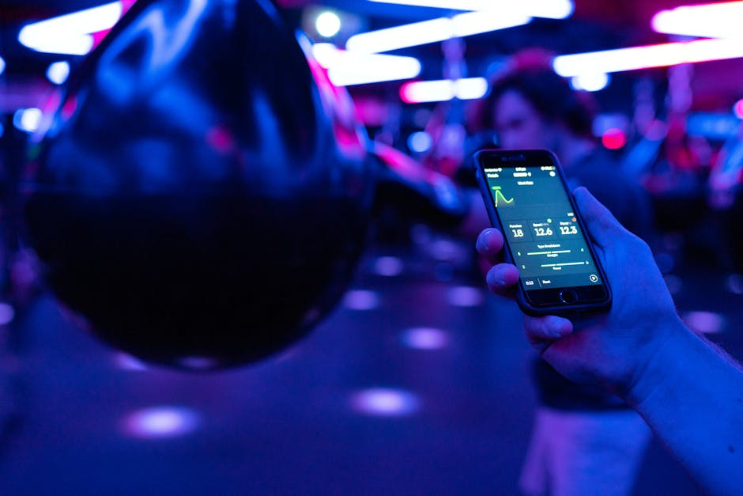
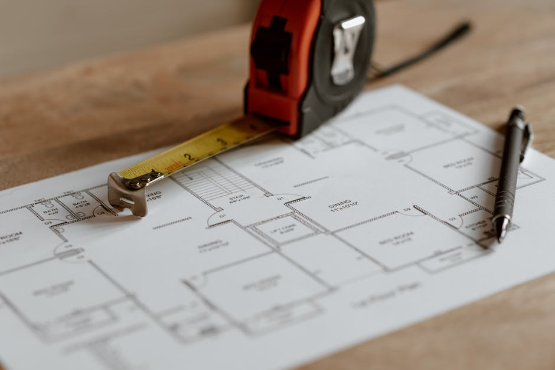

Progetta il futuro, vivi nel comfort.
Survflow è la tua fonte editoriale indipendente per esplorare le potenzialità della casa intelligente. Scopri come l'automazione sta ridefinendo gli spazi abitativi quotidiani.


La nostra visione editoriale
In un'epoca in cui la tecnologia permea ogni aspetto della nostra vita, Survflow nasce per fare chiarezza nel vasto ecosistema della domotica. Analizziamo e raccontiamo l'evoluzione degli spazi abitativi, offrendo ai nostri lettori una prospettiva critica e informata.
Dalle recensioni dei più recenti dispositivi IoT alle guide approfondite sull'integrazione dei sistemi durante le ristrutturazioni, la nostra redazione seleziona le informazioni più rilevanti per chi desidera trasformare la propria abitazione in un ambiente connesso ed efficiente.
Cosa troverai nella nostra rivista
Approfondimenti mirati per comprendere e implementare le migliori soluzioni di automazione residenziale.

Controllo del Clima
Scopri come i termostati intelligenti e i sensori ambientali ottimizzano i consumi energetici, garantendo la temperatura perfetta in ogni stanza e riducendo gli sprechi attraverso l'apprendimento delle tue abitudini.

Illuminazione Connessa
Guide dettagliate sui sistemi di illuminazione adattiva. Dalla scelta delle lampadine smart alla creazione di scenari automatizzati che seguono i ritmi circadiani e migliorano l'atmosfera della tua casa intelligente.

Progettazione Integrata
Consigli per chi sta ristrutturando: come predisporre gli impianti elettrici per accogliere la domotica avanzata, garantendo scalabilità e compatibilità con i futuri dispositivi IoT.
Domande Frequenti
Le risposte della nostra redazione ai dubbi più comuni sull'automazione domestica.
Qual è la differenza tra domotica e dispositivi IoT?
La domotica tradizionale spesso si affida a cablaggi complessi e sistemi centralizzati chiusi, ideali per nuove costruzioni. I dispositivi IoT (Internet of Things) utilizzano invece la rete Wi-Fi o protocolli wireless (come Zigbee o Z-Wave) per comunicare, rendendo la creazione di una smart home più accessibile, modulare e facile da installare anche in case già esistenti.
Quanto costa iniziare ad automatizzare la casa?
L'ingresso nel mondo della casa intelligente è oggi molto economico. Con poche decine di euro è possibile acquistare prese intelligenti o lampadine Wi-Fi per familiarizzare con l'ecosistema. Tuttavia, per un'integrazione completa che includa sicurezza, gestione climatica e automazione avanzata, i costi variano in base alle dimensioni dell'abitazione e alla qualità dei sensori scelti.
I sistemi di smart home sono sicuri dai pirati informatici?
La sicurezza informatica è un tema cruciale. I dispositivi di marchi affidabili utilizzano crittografia avanzata, ma la sicurezza complessiva dipende molto dalla rete domestica. Sulla nostra rivista raccomandiamo sempre di utilizzare password complesse per il router, creare reti Wi-Fi separate per i dispositivi IoT e mantenere costantemente aggiornato il firmware degli apparecchi.
L'automazione aiuta davvero a risparmiare energia?
Sì, l'efficienza energetica è uno dei maggiori vantaggi. Termostati che si spengono quando non c'è nessuno in casa, luci che si regolano in base all'illuminazione naturale e prese che evitano i consumi in standby possono ridurre significativamente la bolletta. I dati e i grafici di consumo forniti dalle app permettono inoltre una maggiore consapevolezza degli sprechi.
Tutti i dispositivi comunicano tra loro?
Non automaticamente. La frammentazione degli ecosistemi è stata a lungo un problema. Tuttavia, con l'introduzione di nuovi standard universali come Matter, l'interoperabilità sta migliorando enormemente. Le nostre guide dedicano ampio spazio a come scegliere hub e protocolli per garantire che telecamere, luci e sensori di brand diversi possano lavorare in sinergia.
Cosa dicono i nostri lettori
"Le guide di Survflow sono state fondamentali durante la ristrutturazione del mio appartamento. Ho evitato errori costosi nella scelta dell'hub centrale e ora controllo tutto tramite un'unica app."
— Marco T., 2026
"Non sono un esperto di tecnologia, ma gli articoli sono scritti in modo così chiaro che sono riuscita a configurare l'illuminazione smart del salotto da sola in meno di un'ora."
— Elena R., 2026
"Apprezzo molto le recensioni oneste sui dispositivi IoT. Mi hanno fatto risparmiare tempo e denaro, indirizzandomi verso prodotti realmente compatibili con le mie esigenze."
— Giovanni S., 2026
Iscriviti alla Newsletter Editoriale
Ricevi settimanalmente le ultime recensioni, guide e tendenze sul mondo dell'automazione e dei dispositivi IoT direttamente nella tua casella.